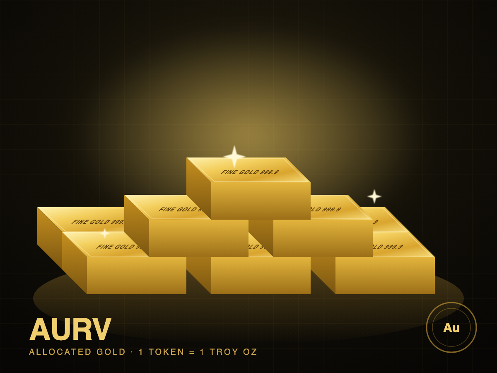

Audit
August bar audit completed with no exceptions; 62 bars verified
Bureau Veritas confirms all bars present and sealed following delivery of the second tranche.
Read more →AURV gives investors direct, fully-allocated ownership of physical gold bullion held in a Class III vault in Zurich, Switzerland, with monthly independent bar audits and redemption for physical metal.

AURV is a bearer-style digital receipt for allocated gold. Each token corresponds to one fine troy ounce of gold held in segregated storage under the investor's beneficial ownership.
Aurum Vault Gold (AURV) is designed for investors who want the store-of-value properties of physical gold without the friction of sourcing, insuring and storing bullion themselves. Each AURV token is backed 1:1 by one fine troy ounce of LBMA Good Delivery gold, held on an allocated basis. The bars are never lent, leased, pledged or rehypothecated.
Bars are held at a Class III high-security vault operated by Helvetia Secure Logistics in the Zurich Freeport. Title to the metal is held by Aurum Vault Trust AG as trustee for token holders, and the bar list (refiner, serial number, gross weight, fineness) is published monthly and reconciled by an independent assayer.
Token holders may redeem any whole 400 oz bar, or 1 oz and 100 g coins and bars for smaller balances, for physical delivery in Switzerland, or sell their tokens on the platform at any time during trading hours.
Every bar is identified by serial number and assigned to the AURV pool. No fractional-reserve, no metal lending.
Bureau Veritas conducts an unannounced monthly bar count and quarterly assay. Reports are published to the data room.
Holders of 400 AURV or more may take delivery of a Good Delivery bar. Smaller balances redeem for 1 oz products.
Specification of the bullion backing AURV, reconciled to the bar list as of the most recent audit.
| Metal | Gold (Au), minimum fineness 995.0 |
| Standard | LBMA Good Delivery, post-2012 responsible sourcing |
| Form | 400 oz (12.4 kg) cast bars; 1 kg bars for reserve float |
| Bar count | 62 bars (58 × 400 oz, 4 × 1 kg) |
| Total fine weight | 2,500.31 troy oz |
| Refiners | Valcambi, Argor-Heraeus, PAMP, Metalor |
| Vault | Helvetia Secure Logistics, Zurich Freeport (Class III) |
| Insurance | All-risk, Lloyd's syndicate, full replacement value |
| Last audit | August 29, 2026 · Bureau Veritas · no exceptions |
Legal title to the bullion sits with Aurum Vault Trust AG, a Swiss trust company regulated by FINMA, acting solely as trustee for the benefit of AURV holders. The trust deed prohibits encumbrance of the metal.
Movement of any bar in or out of the AURV allocation requires dual authorisation from the trustee and the vault operator and is recorded in the published bar list within one business day.
AURV tracks the LBMA PM gold price less accrued storage fees. Historical values below are illustrative.
Summary of the Series A offering. The offering memorandum governs in the event of any inconsistency.
| Token | AURV — Aurum Vault Gold |
| Underlying | 1 fine troy oz allocated gold per token |
| Tokens offered | 2,500 (Series A) |
| Issue price | LBMA PM fix + 0.35% sourcing premium |
| Minimum subscription | 1 AURV (≈ $3,425) |
| Storage & insurance | 0.12% p.a., accrued daily, settled quarterly in AURV |
| Redemption | Physical: 400 AURV per bar, T+5; Cash: sell on platform |
| Eligible investors | Verified retail and institutional; excludes sanctioned jurisdictions |
| Lock-up | None |
| Governing law | Switzerland |
Issue price $3,424.44 (fix $3,412.50 + 0.35% premium).
Aurum Vault Trust AG incorporated; first bars allocated and audited.
2,500 tokens offered on the platform at a rolling LBMA-linked price.
Second tranche of bars delivered to Zurich; monthly audit published.
Remaining tokens allocated; Series B (5,000 oz) to be announced.
Second redemption point via partner vault.
All offering documents are available to prospective investors. Click any document for a summary.
Recent coverage and issuer announcements relevant to AURV holders.
Bureau Veritas confirms all bars present and sealed following delivery of the second tranche.
Read more →Official-sector demand and softer real rates have supported bullion through the summer.
Read more →Holders with fewer than 400 AURV can now take delivery of small-format bars and coins.
Read more →Updated guidance confirms that tokens conferring direct ownership of segregated bullion are treated as asset tokens.
Read more →AURV launches on the platform with an initial 1,000 oz in the vault and a rolling LBMA-linked price.
Read more →A primer on counterparty risk in bullion products and how AURV is structured.
Read more →Common questions from prospective AURV investors.
An investment in AURV involves a high degree of risk. Prospective investors should carefully consider the following, together with the full risk disclosure in the offering memorandum.